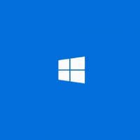
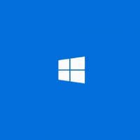
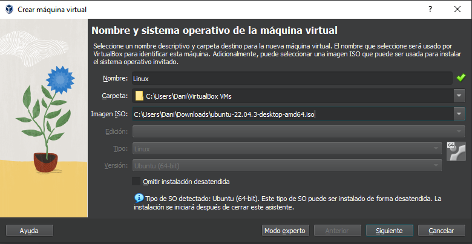
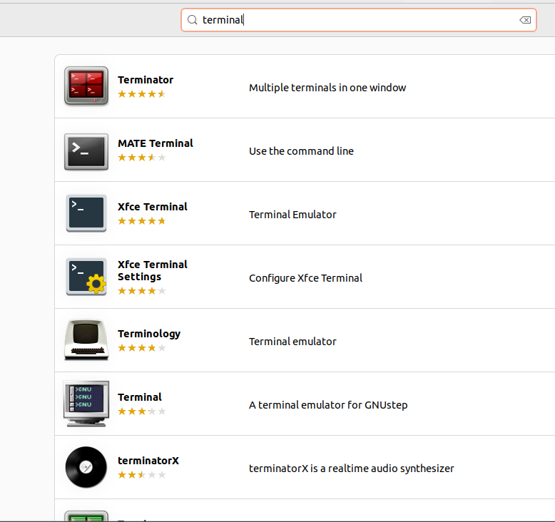
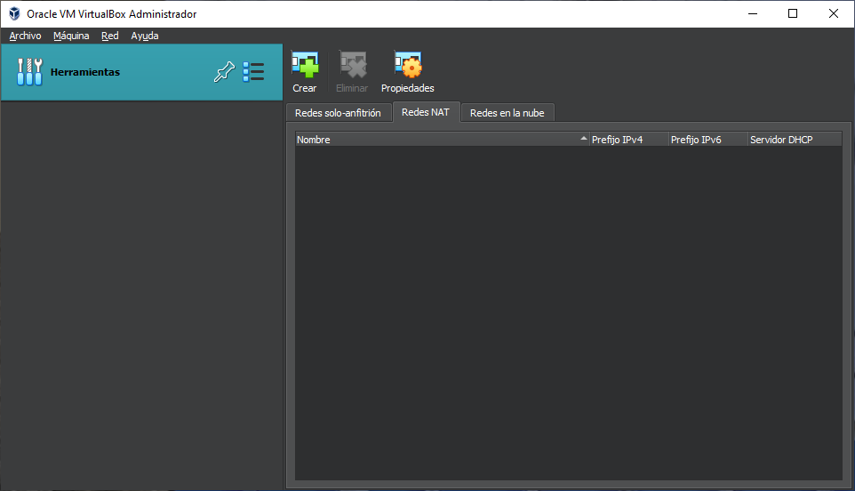
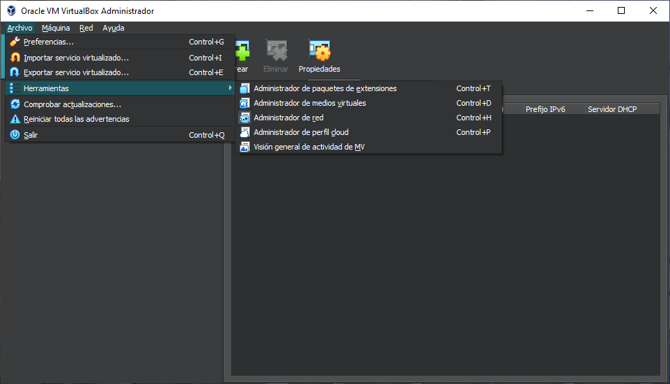
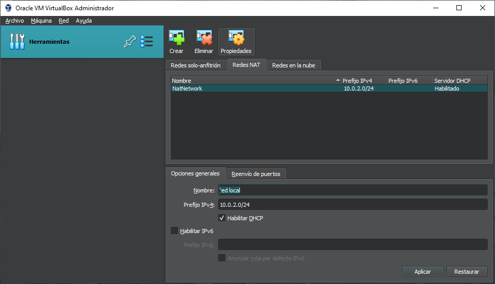
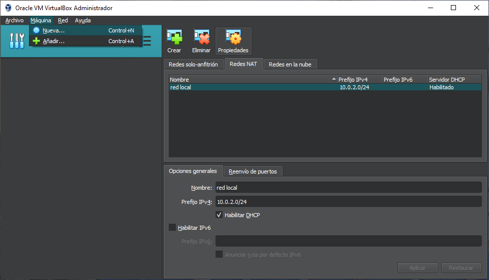

¿Que vamos hacer?
En este How-To, exploraremos la creación de máquinas virtuales tanto de Linux como de Windows para luego establecer una conexión entre ellas a través de Samba, una implementación del protocolo SMB/CIFS que facilita el intercambio de archivos y recursos entre sistemas operativos diferentes en una red local.
En primer lugar, configuraremos nuestras máquinas virtuales utilizando un software de virtualización en este caso VirtualBox. Crearemos una máquina virtual Linux, utilizando Ubuntu, y otra máquina virtual Windows, con Windows 10.
Una vez que nuestras máquinas virtuales estén configuradas y en funcionamiento, procederemos a instalar y configurar el servicio Samba en la máquina Linux. Samba nos permitirá compartir directorios y archivos de forma segura y eficiente entre sistemas Linux y Windows.
¿Cómo empezamos?
Para empezar con este proyecto intalaremos las isos para las maquinas virtuales:
Para instalar las Iso de Windows
pincha aquiPara instalar las Iso de Ubuntu
pincha aquiMaquina Virtual de Linux
Para empezar este paso configuraremos la maquina virtual de linux
Al configurar la maquina virtual debemos instalarnos en ubuntu una terminal e iniciarla
Y ahora en la terminal deberemos seguir los siguientes pasos:
En Linux:
- su -> (Cambiamos a root.)
- apt upgrade -> (en adelante -> supone pulsar Enter)
- apt update->
Instalamos Samba:
- apt install samba-> Instalamos samba
Creamos un nuevo usuario para conectarnos y compartir los documentos.
- Adduser winuser-> Y le damos todo hacia delante
Nos logamos como el usuario. Y vamos a su carpeta personal y creamos una nueva “compartida” a la que le damos permisos:
- su winuser->
- cd ..->
- cd winuser->
- mkdir compartida->
- chmod 777 compartida/
Como Administrador instalamos vim:
- Apt-get install vim->
Dentro de Vim vamos al final y escribimos al final del documento(tecla insert):
- [Compartida]
- path = /home/winuser/compartida
- browseable = yes
- read only = no
- valid users = winuser
Salimos de vim pulsando escape y escribiendo:
- :wq->(write,quit)
Ahora tenemos que añadir a winuser a los usuarios de samba y ponerle una contraseña (seguimos como root):
- smbpasswd –a winuser-> (puede o no coincidir con la que hemos puesto al usuario. Aunque es recomendable)
Ahora nos cambiamos al usuario winuser para crear un archivo dentro de la carpeta compartida
- su winuser->
- cd ..->
- cd winuser/compartida/->
- touch archivo-linux->
Ya solo nos queda resetear el servicio samba desde root.
- su -> (contraseña)
- systemctl restart smbd.service-> (Si nos diera error porque no estuviera en ejecución: reload-or-restart)
Ahora miramos la dirección ip de la máquina (la otorga virtualbox) y la anotamos
- ip a-> (o ifconfig) (inet) buscamos la ip (iplinux)
Y así terminaria el paso de linux.
Configuración de la nat
En este paso vamos a configurar la nat de las maquinas virtuales:
Para empezar nos vamos a la sección de herramientas y le damos a administrador de red.
 Iremos a las redes nat de las maquinas virtuales y pondremos la misma ip
 Maquina Virtual de Windows
Para empezar con la maquina virtual de Windows vamos a configurar la maquina virtual:
En estos dos primero pasos debemos poner un nombre a nuetra maquina virtual (a vuestra eleción) y poner la ISO de windows en "imagen ISO".
Después de darle a siguiente, debemos poner un nombre de usuario y una contraseña (de nuevo a vuestra elección), para continuar debemos copiar
de internet una clave generica de windows 10 que en nuestro caso la copiaremos de está pagina web (pincha aqui)
Y lo ultimo de este paso sería poner un nombre a nuestra máquina


En este paso ya dentro de nuestra maáquina virtual de windows abriremos firewall de Windows Defender y haremos click en configuración avanzada.


Seguidamente le daremos click a reglas de entrada y activaremos los archivos seleccionados de la foto.


Para terminar cerraremos la ventana y en el escritorio hsremos el comando "Windows+r" y nos saldra en pantalla el programa ejecutar y ahí pondremos la ip antes dada en los pasos de linux. Y estaría ya listo nuestra carpeta compartida de linux y windows mediante samba.